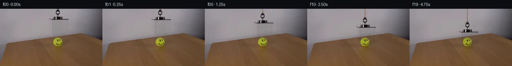

![首帧]()

Round 00
2026-11-05T07:50:36.198124+00:00像素候选变化代码 +176/−0inspection 更新
pixels 17299f53f18c47a9 · code e02f39683d3f87a8
查看本轮 generate.py 真实 diff
--- previous/generate.py
+++ current/generate.py
@@ -0,0 +1,176 @@
+"""Deterministic local-pixel continuation of the supplied scientific setup.
+
+Uses only first_frame.png, prompt.txt, NumPy, Pillow, and SciPy image operations.
+No generative model, external assets, scene renderer, or physics engine is used.
+"""
+from pathlib import Path
+import json
+import numpy as np
+from PIL import Image, ImageDraw, ImageFont
+from scipy.ndimage import gaussian_filter, map_coordinates, shift
+from artifact_io import save
+
+ROOT = Path(__file__).resolve().parent
+W, H = 256, 144
+S = 4
+ORIGINAL = np.asarray(Image.open(ROOT / 'first_frame.png').convert('RGB'))
+SOURCE = ORIGINAL.astype(np.float64)
+YY, XX = np.mgrid[:H, :W].astype(float)
+
+
+def polygon(points, blur=0.22):
+ canvas = Image.new('L', (W*S, H*S), 0)
+ ImageDraw.Draw(canvas).polygon([(round(x*S), round(y*S)) for x,y in points], fill=255)
+ a = np.asarray(canvas.resize((W,H), Image.Resampling.LANCZOS), dtype=float)/255
+ return np.clip(gaussian_filter(a, blur), 0, 1)
+
+
+def line(points, width=0.7, blur=0.20):
+ canvas = Image.new('L', (W*S, H*S), 0)
+ ImageDraw.Draw(canvas).line([(round(x*S),round(y*S)) for x,y in points],
+ fill=255, width=max(1,round(width*S)), joint='curve')
+ a = np.asarray(canvas.resize((W,H), Image.Resampling.LANCZOS), dtype=float)/255
+ return np.clip(gaussian_filter(a, blur), 0, 1)
+
+
+# The sloping wall/table boundary supplies a natural coordinate system for
+# recovering the wall behind the acrylic. Sample ONLY the input itself at
+# clean neighboring columns, aligning their height relative to that boundary.
+def recover_wall():
+ slope = 0.14
+ left, right = 119.0, 177.0
+ a = np.zeros_like(SOURCE)
+ b = np.zeros_like(SOURCE)
+ for ox in [-1, 0, 1]:
+ xl, xr = left+ox, right+ox
+ for c in range(3):
+ a[:,:,c] += map_coordinates(SOURCE[:,:,c],
+ [YY+slope*(XX-xl), np.full_like(XX, xl)], order=1, mode='nearest')/3
+ b[:,:,c] += map_coordinates(SOURCE[:,:,c],
+ [YY+slope*(XX-xr), np.full_like(XX, xr)], order=1, mode='nearest')/3
+ f = np.clip((XX-left)/(right-left), 0, 1)[:,:,None]
+ estimate = a*(1-f)+b*f
+ # A narrow, locally interpolated boundary follows the original table edge.
+ # This avoids moving wood grain into the wall during the restoration.
+ return estimate
+
+
+BODY = polygon([(122.4,24.3),(172.6,25.0),(171.5,48.0),
+ (168.6,66.1),(131.0,69.1),(123.0,60.7)], 0.24)
+RING = polygon([(141.4,0),(147.5,0),(147.8,3.0),(151.0,8.0),
+ (148.0,14.0),(146.3,17.0),(148.0,21.0),(140.0,21.0),
+ (140.7,15.0),(136.8,10.3),(139.1,3.3)], 0.22)
+MOUNT = polygon([(132.2,18.4),(156.8,18.4),(157.3,25.0),
+ (173.0,25.0),(173.0,28.5),(121.4,28.0),
+ (121.4,23.5),(131.9,23.5)], 0.2)
+OPAQUE_REGION = np.maximum(RING, MOUNT)
+REMOVE = np.maximum(BODY, OPAQUE_REGION)
+ESTIMATE = recover_wall()
+CLEAN = SOURCE*(1-REMOVE[:,:,None])+ESTIMATE*REMOVE[:,:,None]
+RESIDUAL = SOURCE-CLEAN
+METAL_RESIDUAL = RESIDUAL*OPAQUE_REGION[:,:,None]
+GLASS_RATIO = RESIDUAL*(1-OPAQUE_REGION[:,:,None])/np.maximum(CLEAN,1)
+METAL_ALPHA = np.clip(np.max(np.abs(RESIDUAL),axis=2)/52,0,1)*OPAQUE_REGION
+
+
+def down(array, distance):
+ offsets=(distance,0) if array.ndim==2 else (distance,0,0)
+ return shift(array, offsets, order=1, mode='constant', cval=0, prefilter=False)
+
+
+def lower_shadow(frame, distance):
+ # Projected base of the stationary-size enclosure on the actual tabletop.
+ contact = np.clip((distance-25)/7,0,1)
+ progress = distance/32
+ footprint = polygon([(125.8,91.8),(155.8,88.5),(167.8,97.8),(131.4,100.0)],0.3)
+ diffuse = gaussian_filter(footprint, 3.1-1.0*progress)
+ shade = diffuse*0.028*progress
… diff truncated; 89 more lines …